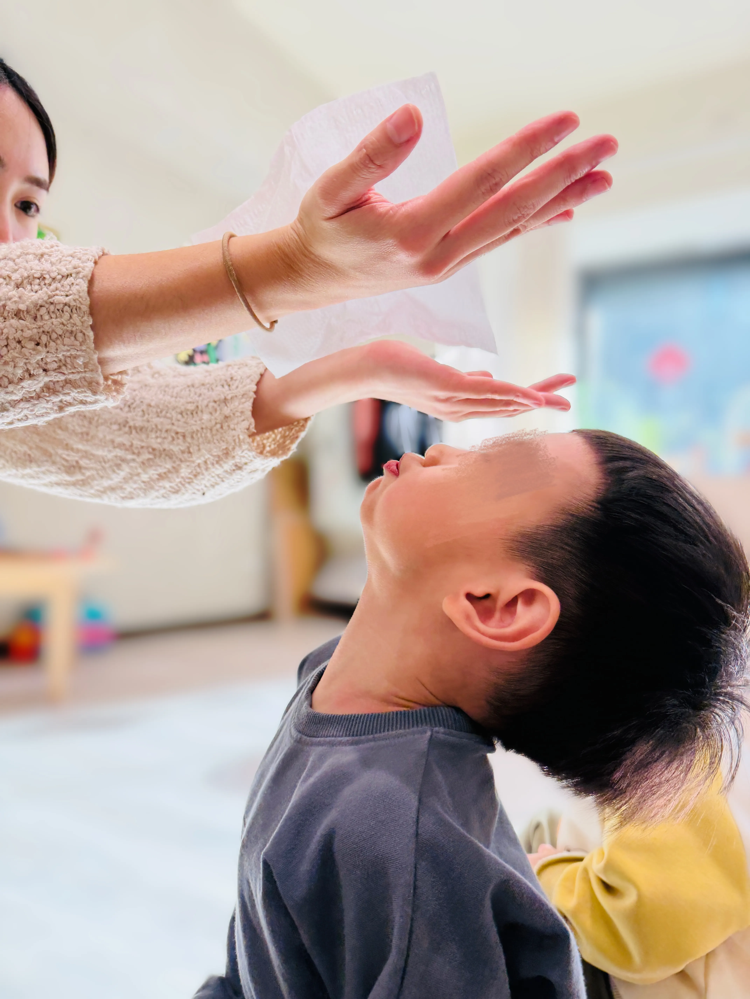
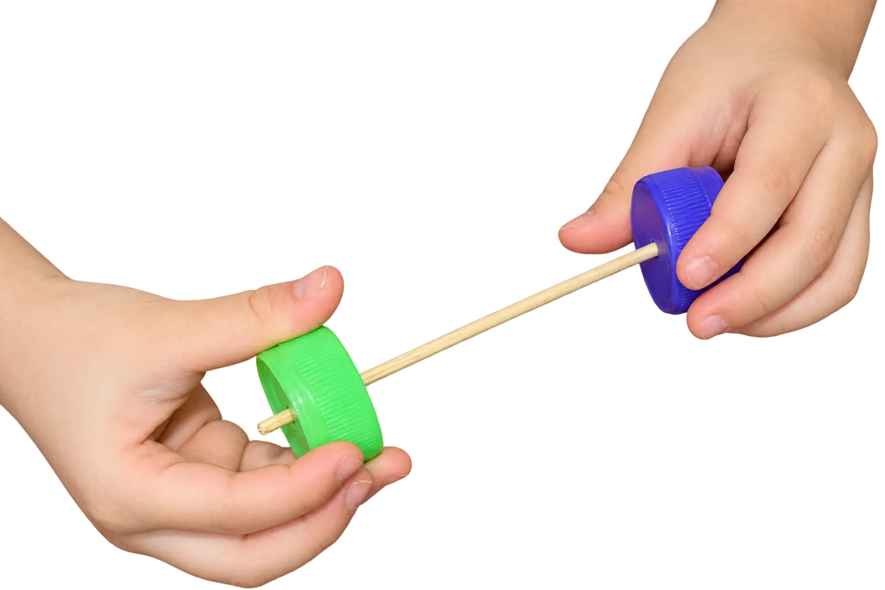
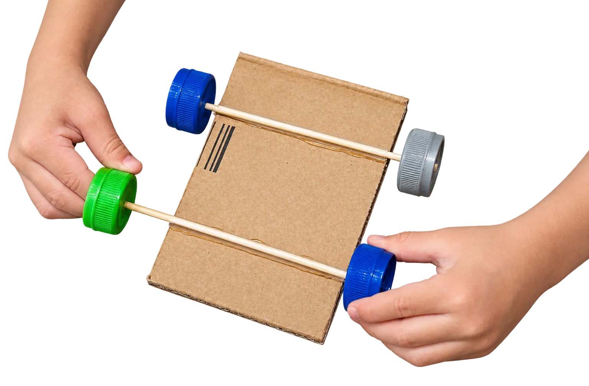
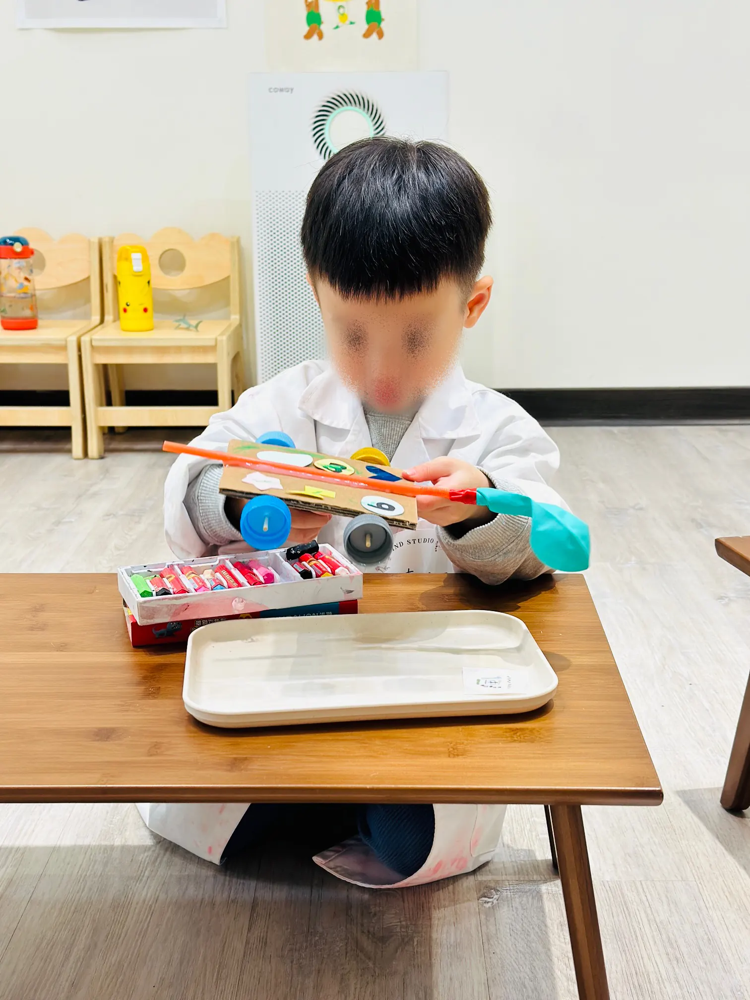
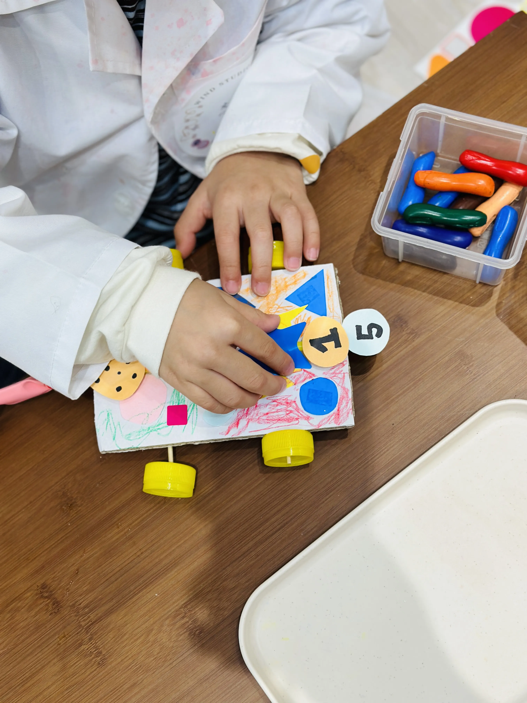

Can the wheels turn?
Some children discovered that a car could not roll smoothly even when pushed by hand. A wheel or another part of the structure was obstructing free rotation.
01 / FULL CASE STUDY · STEAM INQUIRY
A child-led engineering investigation in which questions, movement and repair mattered more than a perfect finished product.

02 / STARTING QUESTION
Before introducing a mechanism, I placed a simple car in front of the children and invited their ideas. They proposed pushing the car by hand, giving it a small push so it might continue moving, and blowing directly onto it.
Children’s suggestions became possibilities to test. Rather than treating these ideas as answers to correct, I used them as starting points for further investigation.
03 / TEACHER MOVE
Introducing this condition shifted the inquiry from direct physical contact toward another possible source of movement. Children began considering whether air inside a balloon might move the car. This was a new condition to investigate, not an answer supplied in advance.
04 / MAKING AIR PERCEPTIBLE
Tissue lifting, balloons expanding, air being held, and released balloons moving unpredictably helped children observe an invisible material through visible effects.

05 / CONSTRUCTING DIFFERENT SOLUTIONS
Children approached the wheel-and-axle problem in different ways. Some connected the wheels directly with a wooden skewer. Others threaded the skewer through a straw guide fixed beneath the cardboard chassis, creating a guide that held the axle in place while allowing it to rotate.

A wooden skewer connected the two bottle-cap wheels directly.

The skewer passed through a straw guide fixed beneath the car body.
The difference was not simply between a correct model and an incorrect one. It revealed what each child was attending to: connecting two wheels, or connecting the wheel-and-axle system to the chassis.
06 / TESTING AND NOTICING PROBLEMS
Some children discovered that a car could not roll smoothly even when pushed by hand. A wheel or another part of the structure was obstructing free rotation.
During trial runs, other cars did not travel in a straight line. Some wheels became increasingly misaligned or nearly detached.


07 / EVIDENCE AND REFLECTION
My role was to make space for theories to be tested, introduce a meaningful constraint, and protect enough time for children to return to what they had built.
I introduced “without touching it” because it changed the problem without supplying the answer. Next, I would compare wheel alignment, test different axle supports, vary balloon size and document how each modification changes distance or direction.
Public-facing classroom media is anonymised, face-blurred or photographed without identifiable faces. Original unedited documentation is not published.